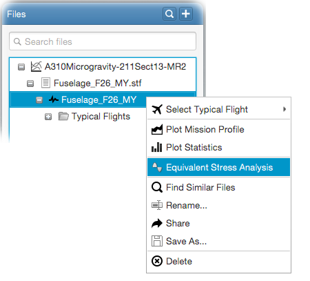

Equivalent fatigue and propagation stresses can be calculated once the stress sequence has been generated. Following video demonstrates how to do this.
For this, fatigue and propagation material data and rainflow omission level (if omission is required) are required as inputs. Right-click on the
generated stress sequence and select Equivalent Stress Analysis from the poup menu as follows.

Once the analysis is over, equivalent stresses can be seen by clicking on the Eq. Stress
item in the file tree. The following equivalent stresses will be calculated at the end of the analysis;
Fatigue equivalent stress,
Propagation equivalent stress (with Preffas),
Propagation equivalent stress (with linear efficiency).